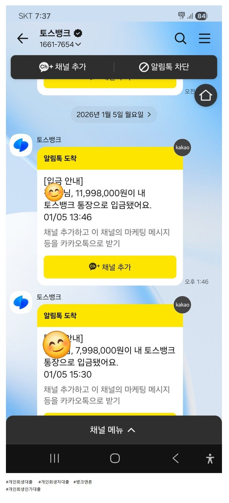

[개인회생자대출 ] 5회차 미납 950만원, 재직단기 2천만 승인. 뱅크앤론 김용혁 대표님 이현섭 과장님 감사드립니다!!!!!
개인회생 인가후 13회차중 5회차 미납상태에 미납금만 950만원 이였습니다.
사업체 운영하다가 사기로 인해 회사 폐업후 프리랜서로 일하다
직장생활 다시 시작한지 3개월쯤 되었네요.
여러모로 2000만원이란 큰자금이 필요해 조건이 어려운 상태에서 대표님께 문의를 드렸습니다.
직장가입자로 3개월밖에 안됐고 미납도 적지 않은금액이라 어려울거라 생각했는데
대표님께서 최대한 긍적심사 요청하신다고 하여 상담후 필요서류 제출 하였습니다.
금요일 상담후 서류제출 하였는데 한가지 서류가 발급이 안되어 월요일로 심사가
미뤄져 버렸네요.
월요일 오전 서류완비가 되어 대표님과 다시 상담후 서류제출 완료하고
두곳에서 1200만원 800만원 가승인 났다고 연락이 왔네요.
가승인후에는 일사천리로 진행이 되던군요.
대출사로부터 전화 상담후 전자계약서 작성하고 잠시후 대출금 안내받고 바로 입금이되더군요.
어려운 시기에 단비같은 대출승인 큰 힘이 되었습니다.
김용혁 대표님과 이현섭과장님 덕에 큰어려움없이 대출 승인이 되었네요.
다시한번 감사드립니다. 연체 없이 잘 상환하도록 하겠습니다!!!!!

https://cafe.naver.com/cityman88/309843